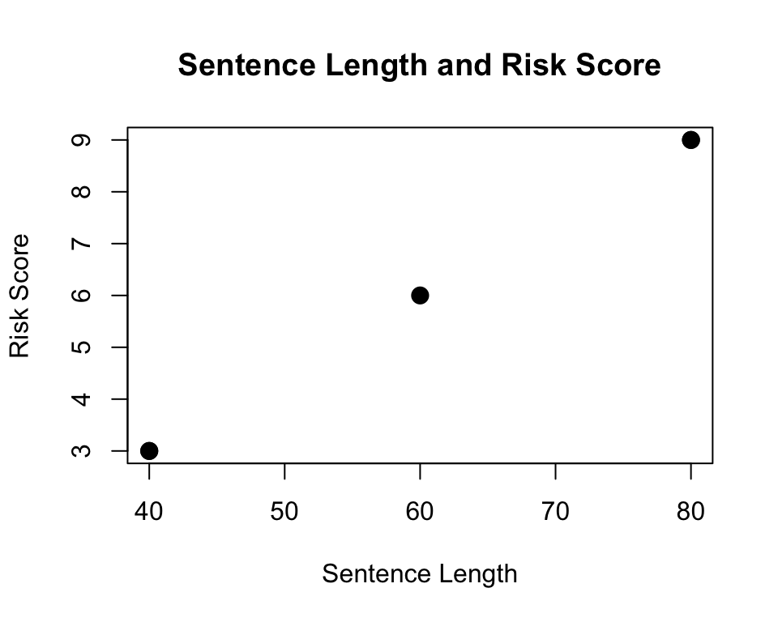
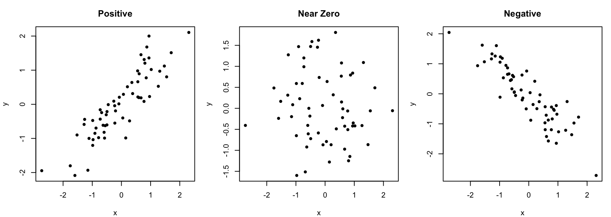
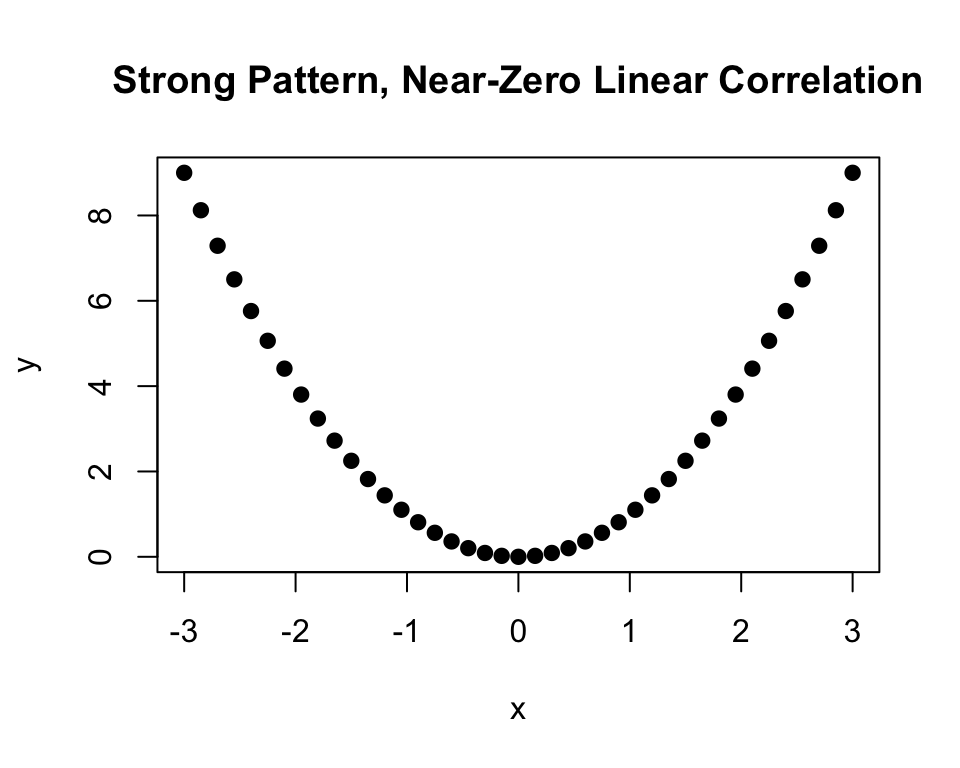

16 Correlation
16.1 The Question
NoteCentral question
What are the direction and strength of the linear relationship between two quantitative variables?
Chapters 14 and 15 examined relationships between categorical variables using bivariate tables and the chi-square test. Many criminal justice questions instead involve two quantitative variables. An analyst might ask whether longer sentences are associated with higher risk scores, whether officer workload is related to community contacts, or whether neighborhood disadvantage is related to crime rates.
A scatterplot provides a visual representation of the relationship. The correlation coefficient, represented by \(r\), summarizes the direction and strength of a linear relationship with a number between \(-1\) and \(1\).
16.2 What You Will Learn
After completing this chapter, you should be able to:
- Identify when correlation is appropriate.
- Construct and interpret a scatterplot.
- Describe the direction, strength, and form of a relationship.
- Calculate the correlation coefficient.
- Interpret the sign and absolute value of \(r\).
- Explain how nonlinearity, outliers, and restricted variation can affect correlation.
- Explain why correlation does not establish causation.
16.3 Relationships Between Quantitative Variables
Correlation is designed for two quantitative variables measured on the same cases. Examples include:
- sentence length and a risk-assessment score for each defendant;
- hours worked and community contacts for each officer;
- calls for service and response time for each patrol area; and
- neighborhood poverty rate and violent-crime rate for each neighborhood.
Each case must have a value on both variables. The paired values are essential. If we know only the separate distribution of sentence length and the separate distribution of risk scores, we cannot determine whether the two variables are related.
The method should match the variable types:
| Variables | Useful method |
|---|---|
| Two categorical variables | Bivariate table and chi-square test |
| One categorical and one quantitative variable | Comparison of group means |
| Two quantitative variables | Scatterplot and correlation |
16.4 Begin with a Scatterplot
A scatterplot places one point on a graph for each case. The horizontal axis displays one variable, conventionally called \(x\), and the vertical axis displays the other, called \(y\).
Suppose five defendants have the following values:
| Defendant | Sentence length (\(x\)) | Risk score (\(y\)) |
|---|---|---|
| 1 | 40 | 3 |
| 2 | 40 | 3 |
| 3 | 60 | 6 |
| 4 | 80 | 9 |
| 5 | 80 | 9 |
The points rise from left to right. Defendants with longer sentences also have higher risk scores in these data.
Two pairs of defendants have identical values, so their points overlap on the graph. A scatterplot may therefore display fewer visible points than there are cases.
16.5 Reading a Scatterplot
Examine four features before calculating a correlation.
16.5.1 Direction
A positive relationship slopes upward: higher values of \(x\) tend to occur with higher values of \(y\). A negative relationship slopes downward: higher values of \(x\) tend to occur with lower values of \(y\).
If the points show no consistent upward or downward pattern, the relationship may have little or no linear direction.
16.5.2 Strength
Strength describes how closely the points follow a consistent pattern. Points clustered tightly around a straight line indicate a stronger linear relationship. Widely scattered points indicate a weaker one.
16.5.3 Form
Correlation summarizes a linear relationship. Before interpreting \(r\), ask whether the points follow an approximately straight-line pattern. A clear curved pattern may represent a strong relationship even when the correlation is near zero.
16.5.4 Unusual Observations
An outlier is a case located far from the general pattern. A single unusual observation can substantially increase, decrease, or reverse a correlation, especially in a small dataset.
TipPlot first, calculate second
Always examine a scatterplot before interpreting a correlation coefficient. The same value of \(r\) can accompany very different patterns, and the coefficient alone may conceal curves, clusters, or influential observations.
16.6 Patterns and the Correlation Coefficient
The following plots illustrate positive, near-zero, and negative linear relationships.

The correlation coefficient ranges from \(-1\) to \(1\):
- \(r=1\) indicates a perfect positive linear relationship.
- \(r=0\) indicates no linear relationship.
- \(r=-1\) indicates a perfect negative linear relationship.
The sign describes direction. The absolute value, \(|r|\), describes strength. For example, \(r=-0.80\) is stronger than \(r=0.30\) even though \(-0.80\) is numerically smaller.
ImportantThere are no universal strength labels
Values closer to \(-1\) or \(1\) indicate stronger linear relationships, but labels such as “weak,” “moderate,” and “strong” depend on the research context, measurement quality, and consequences of the relationship. Interpret the coefficient rather than relying only on a fixed cutoff.
16.7 Calculating the Correlation Coefficient
The sample correlation coefficient is:
\[ r=\frac{\sum(x_i-\bar{x})(y_i-\bar{y})} {\sqrt{\sum(x_i-\bar{x})^2}\sqrt{\sum(y_i-\bar{y})^2}} \]
The numerator measures whether \(x\) and \(y\) deviate from their means in the same direction:
- When both values are above their means, the product is positive.
- When both values are below their means, the product is also positive.
- When one is above its mean and the other is below, the product is negative.
The denominator accounts for the total variation in both variables. Dividing by this quantity places the result on the standard scale from \(-1\) to \(1\).
WarningKeep the cases paired
Each \(x_i\) must remain paired with the \(y_i\) observed for the same case. Sorting one variable without sorting the other in exactly the same way destroys the relationship and produces an invalid correlation.
16.8 Worked Example: Sentence Length and Risk Score
For the five defendants, the means are:
\[ \bar{x}=60 \]
\[ \bar{y}=6 \]
We calculate the deviations, cross-products, and squared deviations:
| Defendant | \(x\) | \(y\) | \(x-\bar{x}\) | \(y-\bar{y}\) | \((x-\bar{x})(y-\bar{y})\) | \((x-\bar{x})^2\) | \((y-\bar{y})^2\) |
|---|---|---|---|---|---|---|---|
| 1 | 40 | 3 | -20 | -3 | 60 | 400 | 9 |
| 2 | 40 | 3 | -20 | -3 | 60 | 400 | 9 |
| 3 | 60 | 6 | 0 | 0 | 0 | 0 | 0 |
| 4 | 80 | 9 | 20 | 3 | 60 | 400 | 9 |
| 5 | 80 | 9 | 20 | 3 | 60 | 400 | 9 |
| Sum | 0 | 0 | 240 | 1,600 | 36 |
Insert the sums into the formula:
\[ r=\frac{240}{\sqrt{1{,}600}\sqrt{36}} =\frac{240}{(40)(6)} =1.00 \]
The two variables have a perfect positive linear relationship in this small sample. Every increase in sentence length corresponds to a proportional increase in risk score.
This does not mean that risk score caused sentence length or that sentence length caused risk score. The variables could reflect shared case characteristics, institutional rules, or the way each measure was produced.
16.9 Interpreting Correlation in Context
A complete interpretation names the variables, direction, strength, cases, and limitations. For example:
Among these five defendants, sentence length and risk score have a perfect positive linear relationship, \(r=1.00\). Defendants with longer sentences have higher risk scores in this sample. The correlation does not establish a causal relationship or show that the pattern applies to other defendants.
Avoid interpretations such as:
- “A one-unit increase in \(x\) causes \(y\) to increase.”
- “An \(r\) of 0.70 means that 70% of the cases follow the pattern.”
- “A correlation near zero means the variables are completely unrelated.”
- “The larger variable should be placed on the \(y\)-axis.”
Correlation is unchanged if the variables switch axes. It is also unchanged by converting a variable to another linear unit, such as months to years. The substantive question, however, should guide which variable is displayed on each axis and how the result is discussed.
16.10 When Correlation Can Mislead
16.10.1 A Near-Zero Correlation Can Hide a Curve
The figure below has a strong curved pattern, but its linear correlation is approximately zero.

The variables are clearly related, but not linearly. Reporting only \(r\) would miss the most important feature of the data.
16.10.2 Outliers Can Dominate the Result
An influential observation can pull the correlation toward \(-1\) or \(1\), weaken an otherwise clear pattern, or reverse its direction. Investigate unusual cases rather than automatically deleting them. The observation may be a data-entry error, a genuinely exceptional case, or evidence that the relationship differs across groups.
16.10.3 Restricted Variation Can Weaken Correlation
A correlation depends on the range of values in the data. If a study includes only high-risk defendants, for example, the limited variation in risk scores may produce a smaller correlation than would appear in a broader population.
16.10.4 Combined Groups Can Conceal Different Patterns
An overall correlation may differ from the correlations within meaningful subgroups. A relationship between workload and arrests could vary by assignment, shift, neighborhood, or officer role. A scatterplot using different symbols or panels for relevant groups can reveal this structure.
16.11 Correlation Does Not Establish Causation
An observed correlation can arise for several reasons:
- \(x\) may influence \(y\);
- \(y\) may influence \(x\);
- a third variable may influence both;
- the cases may have been selected in a way that creates the pattern;
- the measures may share a common source or classification process; or
- the association may reflect sampling variability.
For example, a positive relationship between neighborhood police presence and recorded crime does not necessarily mean police presence increases crime. Police resources may be assigned to places with more reported crime, and increased police presence may also increase the detection and recording of offenses.
ImportantAsk how the data were produced
Interpreting correlation requires more than inspecting \(r\). Consider the unit of analysis, measurement process, time order, sampling design, plausible third variables, and institutional practices that generated the observations.
16.12 Check Your Understanding
Suppose six defendants have the following values:
| Defendant | Sentence length (\(x\)) | Risk score (\(y\)) |
|---|---|---|
| 1 | 20 | 9 |
| 2 | 30 | 7 |
| 3 | 40 | 8 |
| 4 | 50 | 5 |
| 5 | 60 | 4 |
| 6 | 70 | 3 |
- What direction should appear in a scatterplot?
- Calculate the correlation coefficient.
- Interpret the result.
- What can you not conclude from this correlation?
NoteCheck your answers
The points generally descend from left to right, indicating a negative linear relationship.
First, calculate the means:
\[ \bar{x}=\frac{20+30+40+50+60+70}{6} =\frac{270}{6} =45 \]
\[ \bar{y}=\frac{9+7+8+5+4+3}{6} =\frac{36}{6} =6 \]
Next, calculate the deviations, cross-products, and squared deviations:
| Defendant | \(x\) | \(y\) | \(x-\bar{x}\) | \(y-\bar{y}\) | \((x-\bar{x})(y-\bar{y})\) | \((x-\bar{x})^2\) | \((y-\bar{y})^2\) |
|---|---|---|---|---|---|---|---|
| 1 | 20 | 9 | -25 | 3 | -75 | 625 | 9 |
| 2 | 30 | 7 | -15 | 1 | -15 | 225 | 1 |
| 3 | 40 | 8 | -5 | 2 | -10 | 25 | 4 |
| 4 | 50 | 5 | 5 | -1 | -5 | 25 | 1 |
| 5 | 60 | 4 | 15 | -2 | -30 | 225 | 4 |
| 6 | 70 | 3 | 25 | -3 | -75 | 625 | 9 |
| Sum | 0 | 0 | -210 | 1,750 | 28 |
Insert the sums into the correlation formula:
\[ r= \frac{\sum(x_i-\bar{x})(y_i-\bar{y})} {\sqrt{\sum(x_i-\bar{x})^2}\sqrt{\sum(y_i-\bar{y})^2}} \]
\[ r= \frac{-210} {\sqrt{1{,}750}\sqrt{28}} \]
\[ r= \frac{-210} {(41.833)(5.292)} = \frac{-210}{221.359} = -0.949 \]
Sentence length and risk score have a strong negative linear relationship in this sample. Defendants with longer sentences tend to have lower risk scores.
The result does not establish that sentence length changes risk scores, that risk scores change sentence length, or that this pattern applies to a broader population.
16.13 Test Your Knowledge: Officer Workload and Activity
16.13.1 The Scenario
A police department is interested in how officer workload relates to enforcement and community activity. Data are collected for six patrol officers:
| Officer | Hours worked | Arrests made | Community contacts |
|---|---|---|---|
| 1 | 20 | 9 | 3 |
| 2 | 30 | 6 | 5 |
| 3 | 40 | 7 | 6 |
| 4 | 50 | 5 | 9 |
| 5 | 60 | 3 | 10 |
| 6 | 70 | 6 | 9 |
16.13.2 Your Task
For each pair of variables:
- Construct or examine a scatterplot.
- Calculate the correlation coefficient.
- Describe the direction and strength of the linear relationship.
Calculate correlations for:
- hours worked and arrests made;
- hours worked and community contacts; and
- arrests made and community contacts.
Then answer the following:
- Which pair has the strongest linear relationship?
- Identify one limitation of drawing conclusions from these data.
- Explain why the three correlations do not establish a causal chain among workload, arrests, and community contacts.
NoteReview the answers
Let:
- \(h\) represent hours worked;
- \(a\) represent arrests made; and
- \(c\) represent community contacts.
First, calculate the mean of each variable:
\[ \bar{h} = \frac{20+30+40+50+60+70}{6} = \frac{270}{6} = 45 \]
\[ \bar{a} = \frac{9+6+7+5+3+6}{6} = \frac{36}{6} = 6 \]
\[ \bar{c} = \frac{3+5+6+9+10+9}{6} = \frac{42}{6} = 7 \]
Next, calculate the deviations and squared deviations:
| Officer | \(h-\bar{h}\) | \((h-\bar{h})^2\) | \(a-\bar{a}\) | \((a-\bar{a})^2\) | \(c-\bar{c}\) | \((c-\bar{c})^2\) |
|---|---|---|---|---|---|---|
| 1 | -25 | 625 | 3 | 9 | -4 | 16 |
| 2 | -15 | 225 | 0 | 0 | -2 | 4 |
| 3 | -5 | 25 | 1 | 1 | -1 | 1 |
| 4 | 5 | 25 | -1 | 1 | 2 | 4 |
| 5 | 15 | 225 | -3 | 9 | 3 | 9 |
| 6 | 25 | 625 | 0 | 0 | 2 | 4 |
| Sum | 0 | 1,750 | 0 | 20 | 0 | 38 |
The cross-products for the three pairs are:
| Officer | \((h-\bar{h})(a-\bar{a})\) | \((h-\bar{h})(c-\bar{c})\) | \((a-\bar{a})(c-\bar{c})\) |
|---|---|---|---|
| 1 | -75 | 100 | -12 |
| 2 | 0 | 30 | 0 |
| 3 | -5 | 5 | -1 |
| 4 | -5 | 10 | -2 |
| 5 | -45 | 45 | -9 |
| 6 | 0 | 50 | 0 |
| Sum | -130 | 240 | -24 |
16.13.3 Hours Worked and Arrests Made
Insert the appropriate sums into the correlation formula:
\[ r_{ha} = \frac{\sum(h_i-\bar{h})(a_i-\bar{a})} {\sqrt{\sum(h_i-\bar{h})^2}\sqrt{\sum(a_i-\bar{a})^2}} \]
\[ r_{ha} = \frac{-130} {\sqrt{1{,}750}\sqrt{20}} \]
\[ r_{ha} = \frac{-130} {(41.833)(4.472)} = \frac{-130}{187.083} = -0.695 \]
Hours worked and arrests made have a moderately strong negative linear relationship. Officers who worked more hours generally made fewer arrests in this sample.
16.13.4 Hours Worked and Community Contacts
\[ r_{hc} = \frac{\sum(h_i-\bar{h})(c_i-\bar{c})} {\sqrt{\sum(h_i-\bar{h})^2}\sqrt{\sum(c_i-\bar{c})^2}} \]
\[ r_{hc} = \frac{240} {\sqrt{1{,}750}\sqrt{38}} \]
\[ r_{hc} = \frac{240} {(41.833)(6.164)} = \frac{240}{257.876} = 0.931 \]
Hours worked and community contacts have a strong positive linear relationship. Officers who worked more hours generally had more community contacts.
16.13.5 Arrests Made and Community Contacts
\[ r_{ac} = \frac{\sum(a_i-\bar{a})(c_i-\bar{c})} {\sqrt{\sum(a_i-\bar{a})^2}\sqrt{\sum(c_i-\bar{c})^2}} \]
\[ r_{ac} = \frac{-24} {\sqrt{20}\sqrt{38}} \]
\[ r_{ac} = \frac{-24} {(4.472)(6.164)} = \frac{-24}{27.568} = -0.871 \]
Arrests made and community contacts have a strong negative linear relationship. Officers with more community contacts generally made fewer arrests in this sample.
The completed results are:
| Variable pair | \(r\) | Interpretation |
|---|---|---|
| Hours worked and arrests made | -0.695 | A moderately strong negative linear relationship |
| Hours worked and community contacts | 0.931 | A strong positive linear relationship |
| Arrests made and community contacts | -0.871 | A strong negative linear relationship |
Hours worked and community contacts have the strongest linear relationship because \(|0.931|\) is the largest absolute correlation.
The results are based on only six officers, so an unusual observation can have a substantial effect and the patterns may not represent other officers or time periods. Assignment, shift, patrol area, officer role, and departmental expectations could influence all three variables.
The correlations do not establish that working more hours causes additional community contacts, that community contacts reduce arrests, or that workload produces a sequence connecting all three outcomes. Correlation describes paired patterns. Causal conclusions require evidence about time order, alternative explanations, and research design.
16.14 Data Investigation: Visualizing a Quantitative Relationship
Identify two quantitative variables measured on the same cases.
- State a research question about their relationship.
- Identify the unit of analysis and explain how each variable was measured.
- Construct a scatterplot.
- Describe its direction, strength, form, and unusual observations.
- Calculate and interpret \(r\).
- Compare the coefficient with the visual pattern.
- Identify at least one alternative explanation or limitation.
If the scatterplot is clearly curved or separated into clusters, explain why a single correlation may be an incomplete summary.
16.15 Project Connection
If your investigation contains two quantitative variables measured on the same cases, construct a scatterplot and calculate their correlation. Interpret the coefficient in context and explain what the result does not establish.
If your variables are not both quantitative, identify the method from Chapters 13–15 that better matches their measurement levels and research question.
16.16 Part III: What You Can Now Do
Part III developed tools for examining relationships between variables. You can now:
- construct and interpret a bivariate table for two categorical variables;
- select conditional proportions that answer a research question;
- use a chi-square test to evaluate independence;
- construct and interpret a scatterplot for two quantitative variables;
- calculate and interpret a correlation coefficient; and
- distinguish association from causal explanation.
The central lesson is that no single statistic speaks for itself. A sound analysis matches the method to the variables, inspects the underlying data, and limits the conclusion to what the research design can support.
16.17 Chapter Summary
- A scatterplot displays paired values for two quantitative variables.
- Direction, strength, form, and unusual observations should be examined before calculating a summary statistic.
- The correlation coefficient ranges from \(-1\) to \(1\) and summarizes a linear relationship.
- The sign of \(r\) indicates direction, while \(|r|\) indicates strength.
- A correlation near zero does not rule out a nonlinear relationship.
- Outliers, restricted variation, and combined subgroups can alter or conceal a correlation.
- Correlation does not establish causation.
16.18 Key Terms
- Correlation coefficient (\(r\)): A statistic ranging from \(-1\) to \(1\) that describes the direction and strength of a linear relationship between two quantitative variables.
- Form: The shape of a relationship, such as linear or curved.
- Linear relationship: A relationship that can be approximated by a straight line.
- Negative relationship: A pattern in which higher values of one variable tend to occur with lower values of another.
- Outlier: An observation located far from the general pattern of the data.
- Positive relationship: A pattern in which higher values of one variable tend to occur with higher values of another.
- Restricted variation: A limited range of values that may weaken or conceal an association.
- Scatterplot: A graph displaying paired values for two quantitative variables, with one point for each case.